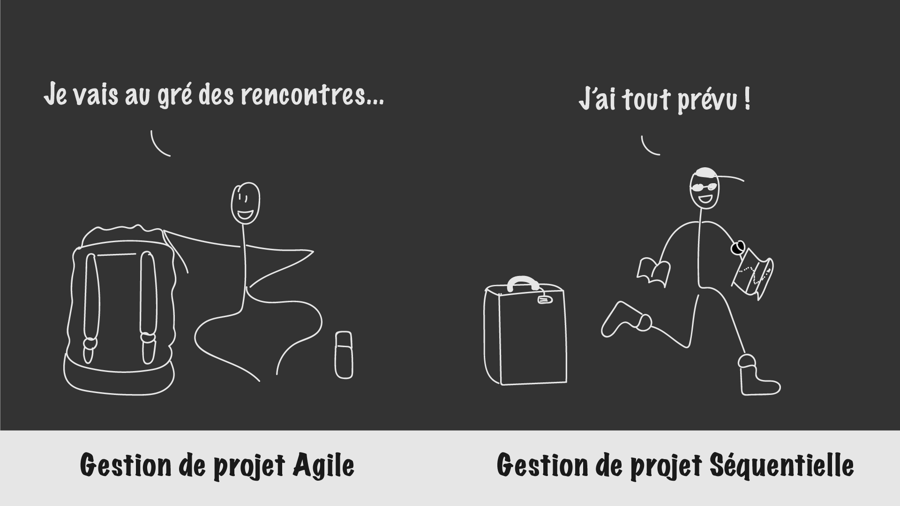

Gérez votre projet informatique facimlement
Quand on se lance dans un projet un minimum ambitieux, on parle tout de suite “gestion de projets”. C’est un grand mot pour désigner quelque chose que nous faisons déjà dans la vie de tous les jours : organiser des tâches et prévoir une date de fin. Un peu comme quand on organise des vacances !
Quand on se lance dans un projet un minimum ambitieux, on parle tout de suite “gestion de projets”. C’est un grand mot pour désigner quelque chose que nous faisons déjà dans la vie de tous les jours : organiser des tâches et prévoir une date de fin. Un peu comme quand on organise des vacances !
La gestion de projets informatique est assez semblable sauf qu’on va plutôt parler de méthodes séquentielles, avec lesquelles on prévoit tout tout depuis le début, ou de méthodes agiles, qui laissent le champ libre aux changements.
Dans ce cours vous partirez avec moi dans un grand voyage à la rencontre de ces méthodes. Nous verrons ensemble ce que sont les spécifications fonctionnelles, les specs techniques et le cahier des charges. Vous utiliserez une des méthodologies de projet agile les plus connues, Scrum, pour transformer le cahier des charges en user stories et planifier plusieurs sprints.
En bref, vous saurez enfin comment vous lancer de manière pertinente et structurée dans un projet que l’on vient de vous confier. Vous serez également bien plus performant·e et organisé·e. Les papillons voleront sous un ciel bleu lavande et vous ferez la danse de la joie avec vos collègues (on sous-estime bien souvent les conséquences d’une gestion de projet réussie). Prêt·e ? Inscrivez-vous !